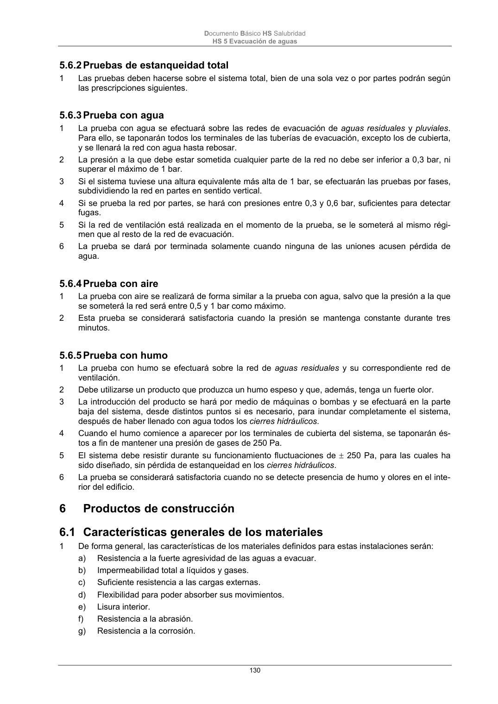

DB-HS · Fragmento de PDF p130 · versión 2022-06-14 · capa oficial
Formatos: JSON compacto · Markdown · PDF fuente
Ámbito del documento · texto del ámbito · documento y tablas
ID técnico a0294 · PDF pág. 130 · jerarquía no validada por persona · no es capítulo: sin_linea_de_encabezado · padre: raíz · literal original en el contenido: «5.6.5 Prueba con humo»
5.6.5 Prueba con humo 1 La prueba con humo se efectuará sobre la red de aguas residuales y su correspondiente red de ventilación. 2 Debe utilizarse un producto que produzca un humo espeso y que, además, tenga un fuerte olor. 3 La introducción del producto se hará por medio de máquinas o bombas y se efectuará en la parte baja del sistema, desde distintos puntos si es necesario, para inundar completamente el sistema, después de haber llenado con agua todos los cierres hidráulicos. 4 Cuando el humo comience a aparecer por los terminales de cubierta del sistema, se taponarán és- tos a fin de mantener una presión de gases de 250 Pa. 5 El sistema debe resistir durante su funcionamiento fluctuaciones de 250 Pa, para las cuales ha sido diseñado, sin pérdida de estanqueidad en los cierres hidráulicos. 6 La prueba se considerará satisfactoria cuando no se detecte presencia de humo y olores en el inte- rior del edificio. 6

PDF fuente redistribuible: copia fiel enlazada en esta página (SHA256 verificado).